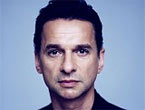
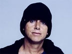
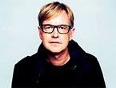
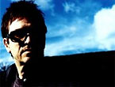
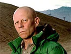
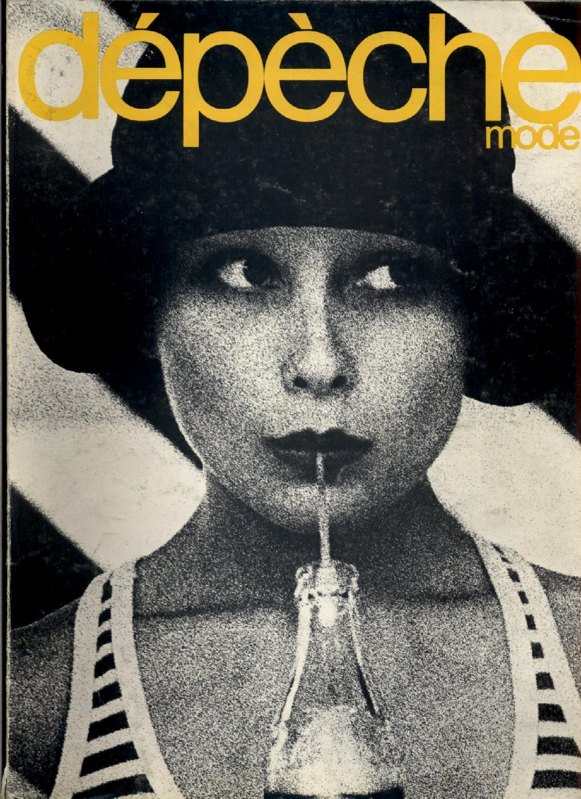

The Sound
The sound of Depeche Mode is often described as electronic music influenced by new wave ⁄ new remantic.
Martin Gore take over the place as songwriter and soundcreator, after Vince Clarke left the band.
Dave Gahan also became a member of the songwriter team as soon as both styles fit toegther.
For fans it doesn't matter, who has written the song, as long as it has its unmistakable and unbelievable Sound of Depeche Mode!
Depeche Mode are:
Dave Gahan
Martin Gore
Andrew Fletcher
Ex-Members:
Alan Wilder
Vince Clarke
The Name "Depeche Mode"
After severels names the band decided to name "Depeche Mode" in 1980 after Dave Gahan joined the band. It was also him, who suggested this name.
The name was originally the name of a famous french fashion magazine.
The band became more famous than the magazin, so most people associate the name with the band.
The magazine is not longer publisehd anymore, so the band exists longer than the magazine.